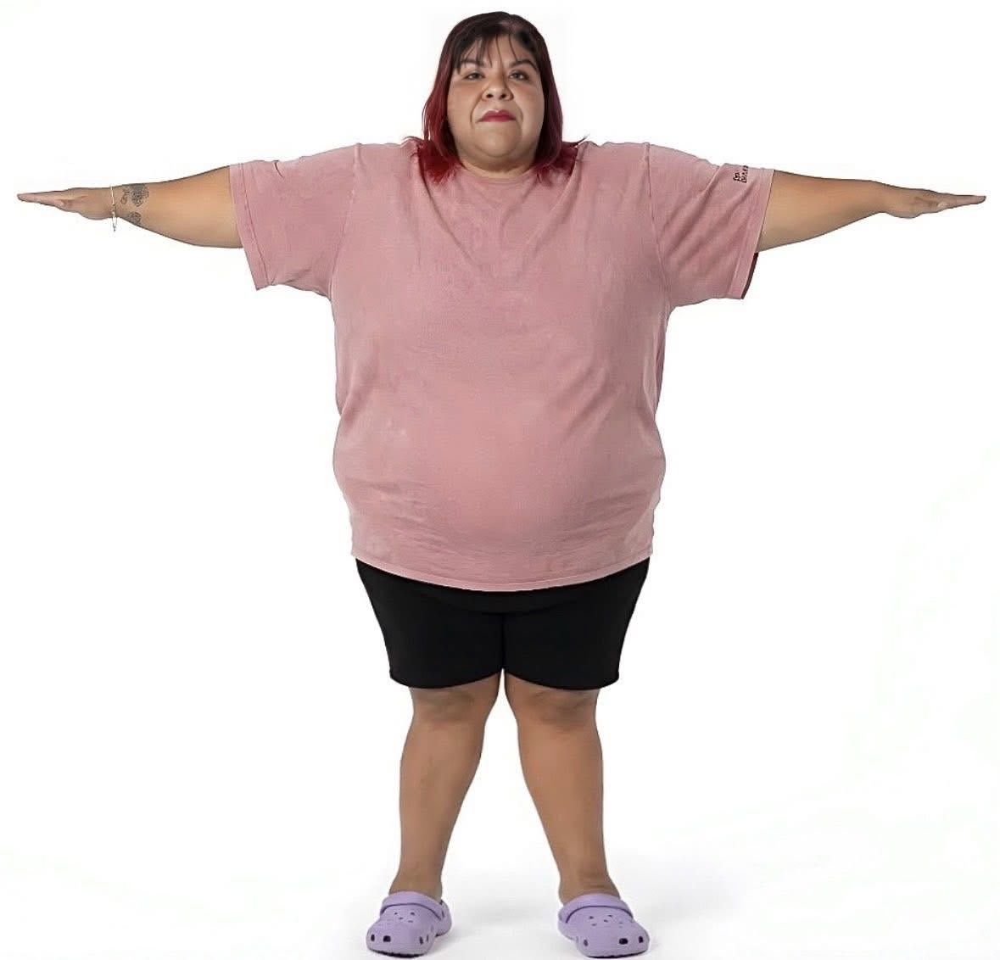

Conoce tu IMC y aprende a interpretar el resultado.

El Índice de Masa Corporal (IMC) es una medida utilizada para estimar si una persona tiene un peso adecuado con relación a su estatura. Es una herramienta sencilla que permite identificar posibles riesgos relacionados con el bajo peso, el sobrepeso o la obesidad.
Aunque el IMC no mide directamente la cantidad de grasa corporal, es uno de los indicadores más utilizados por profesionales de la salud para realizar una evaluación inicial del estado nutricional.
La fórmula para calcular el Índice de Masa Corporal es:
Ejemplo:
Una persona que pesa 70 kg y mide 1.70 m tiene un IMC de:
| IMC | Clasificación |
|---|---|
| Menor de 18.5 | Bajo peso |
| 18.5 - 24.9 | Peso saludable |
| 25 - 29.9 | Sobrepeso |
| 30 o más | Obesidad |
Consumir frutas, verduras, cereales integrales y proteínas de calidad.
Realizar al menos 150 minutos de ejercicio moderado por semana.
Beber suficiente agua y reducir el consumo de bebidas azucaradas.
Dormir entre siete y nueve horas diariamente favorece un metabolismo saludable.
Conocer el Índice de Masa Corporal ayuda a identificar posibles riesgos relacionados con el peso y motiva a adoptar hábitos saludables. Mantener una alimentación equilibrada, realizar actividad física y acudir a revisiones médicas son acciones fundamentales para cuidar la salud.